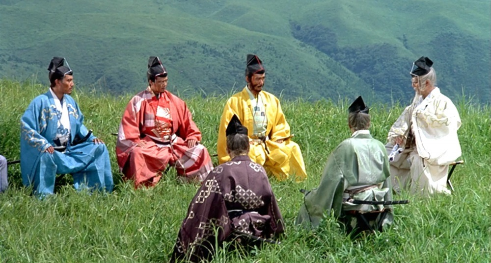
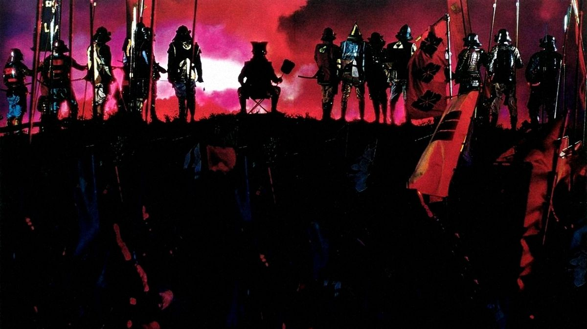

Film Making Style
Kurosawa's filmmaking style is known for its meticulous composition, dynamic action scenes, and deep character-driven storytelling. He employed innovative techniques, blending traditional Japanese aesthetics with Western influences. His works are characterized by their stark, realistic depictions of human nature, morality, and social issues.
Visual Style
- Composition: Kurosawa's frames are often highly composed, with striking use of landscapes, architectural elements, and the positioning of characters within the shot.
- Camera Movement: He was known for his fluid and dynamic camera movements, often using long takes and wide shots that helped to build a sense of scope and immersion in his films.
- Lighting and Color: Kurosawa used lighting to create dramatic contrasts, especially in his later color films. His use of color in films like Ran and Kagemusha was groundbreaking.
Narrative Techniques
- Non-linear Storytelling: Kurosawa often employed non-linear narratives, using flashbacks and multiple perspectives to tell complex stories.
- Epic Scale and Intimate Drama: He was adept at blending grand, sweeping narratives with personal, intimate moments, making his films emotionally resonant while also larger than life..
- Dialogue and Silence: Kurosawa's films feature powerful dialogue, but he also masterfully used silence to convey emotion and tension.
Influence of Japanese Culture and Literature
Kurosawa was deeply influenced by Japanese culture, literature, and the traditions of Kabuki and Noh theater. His adaptations of Shakespeare, Dostoevsky, and other Western works reflect his ability to blend Eastern and Western storytelling traditions.
© 2025 Akira Kurasawa Foundation